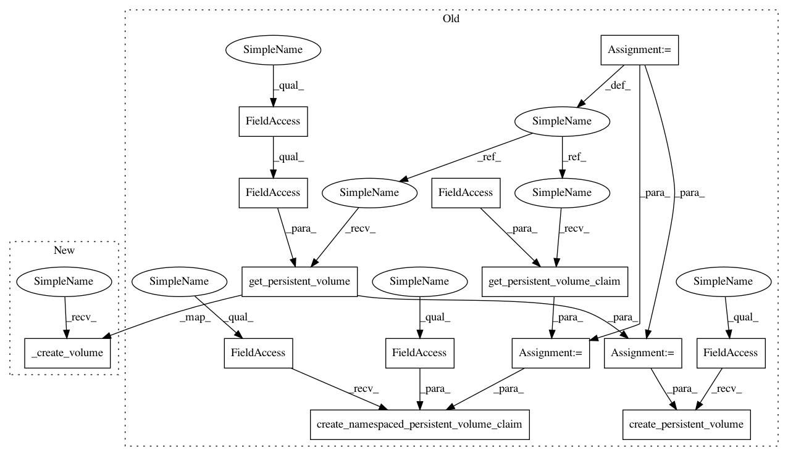

7f1d6982af084077a5c2597c6595329e3f772aab,polyaxon_schemas/k8s/manager.py,K8SManager,create_files_volumes,#K8SManager#,187
Before Change
self.has_tmp_volume = True
def create_files_volumes(self):
pvol = persistent_volumes.get_persistent_volume(volume=constants.POLYAXON_FILES_VOLUME,
run_type=self.polyaxonfile.run_type)
self.k8s.create_persistent_volume(pvol)
pvol_claim = persistent_volumes.get_persistent_volume_claim(
volume=constants.POLYAXON_FILES_VOLUME)
self.k8s.create_namespaced_persistent_volume_claim(self.namespace, pvol_claim)
self.has_files_volume = True
def create_cluster_config_map(self, experiment=0):
config_map = config_maps.get_cluster_config_map(
After Change
self.has_tmp_volume = True
def create_files_volumes(self):
self._create_volume(constants.POLYAXON_FILES_VOLUME)
self.has_files_volume = True
def _delete_volume(self, volume):
self.k8s.delete_persistent_volume(
In pattern: SUPERPATTERN
Frequency: 4
Non-data size: 14
Instances
Project Name: polyaxon/polyaxon
Commit Name: 7f1d6982af084077a5c2597c6595329e3f772aab
Time: 2017-10-19
Author: mouradmourafiq@gmail.com
File Name: polyaxon_schemas/k8s/manager.py
Class Name: K8SManager
Method Name: create_files_volumes
Project Name: polyaxon/polyaxon
Commit Name: 7f1d6982af084077a5c2597c6595329e3f772aab
Time: 2017-10-19
Author: mouradmourafiq@gmail.com
File Name: polyaxon_schemas/k8s/manager.py
Class Name: K8SManager
Method Name: create_data_volume
Project Name: polyaxon/polyaxon
Commit Name: 7f1d6982af084077a5c2597c6595329e3f772aab
Time: 2017-10-19
Author: mouradmourafiq@gmail.com
File Name: polyaxon_schemas/k8s/manager.py
Class Name: K8SManager
Method Name: create_logs_volume
Project Name: polyaxon/polyaxon
Commit Name: 7f1d6982af084077a5c2597c6595329e3f772aab
Time: 2017-10-19
Author: mouradmourafiq@gmail.com
File Name: polyaxon_schemas/k8s/manager.py
Class Name: K8SManager
Method Name: create_tmp_volumes